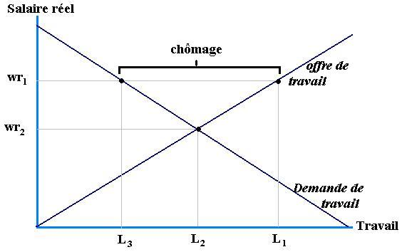
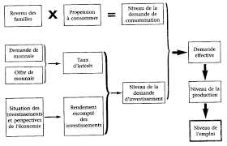
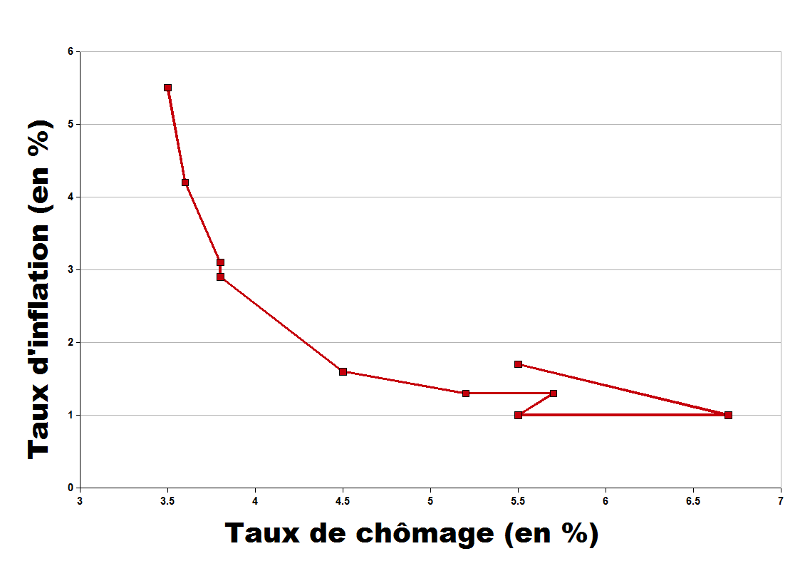
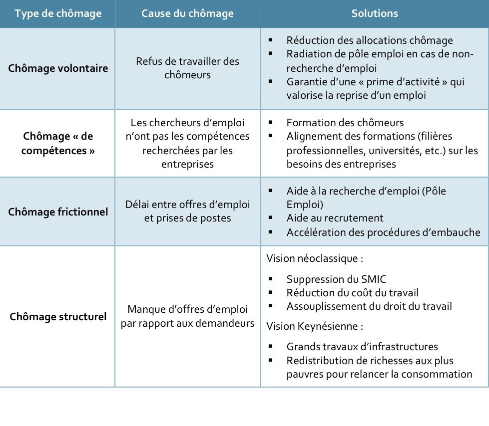

6 Chapitre 3: Emploi et Chômage
6.1 Section 1: Les déséquilibres sur le marché du travail: le chômage
6.1.1 La notion de marché du travail
Offre et Demande de travail
Un marché comme les autres ?
6.1.2 Taux d’activité, taux d’emploi et taux de chômage
6.1.3 Exercice Fictif de Calcul des Indicateurs du Marché du Travail
6.1.3.1 Contexte : La ville de Laboria
La ville de Laboria compte 50 000 habitants en âge de travailler (15 ans et plus). Les autorités locales cherchent à mieux comprendre la situation du marché du travail à partir des données suivantes :
Personnes en emploi : 28 000
Chômeurs : 4 000
Population inactive : 18 000 (étudiants, retraités, personnes ne cherchant pas d’emploi).
Le taux de chômage = (Nombre de chômeurs / Population active) × 100
Le taux d’emploi = (Population en emploi / Population en âge de travailler) × 100
Le taux d’activité = (Population active / Population en âge de travailler) × 100
6.1.4 Le chômage, un concept hétérogène
6.1.4.1 Une pluralité de mesures du chômage
Au sens du BIT, au sens de pôle Emploi
Trouver les chiffres actuels
6.1.4.2 Le chômage, un concept flou
Le hâlo autour du chômage
Le halo autour du chômage est composé de personnes sans emploi qui, soit recherchent un emploi mais ne sont pas disponibles dans les deux semaines pour travailler, soit n’ont pas effectué de démarche active de recherche d’emploi dans le mois précédent mais souhaitent travailler, qu’elles soient disponibles ou non. Le halo regroupe donc les personnes inactives au sens du BIT (ni en emploi, ni au chômage), mais proches du marché du travail.
Source: INSEE6.1.4.3 L’approche du chômage en termes de flux
L’approche en termes de flux considère le chômage comme un phénomène dynamique, où les individus entrent et sortent continuellement du marché du travail. Plutôt que de voir le chômage comme un stock statique (nombre total de chômeurs à un instant donné), cette approche analyse les mouvements entre trois états :
L’emploi (E)
Le chômage (U - Unemployment)
L’inactivité (N - Non-actifs, c’est-à-dire ceux qui ne recherchent pas d’emploi)
Les individus peuvent passer d’un état à un autre sous l’effet de différents facteurs :
Flux d’entrée dans le chômage :
Perte d’emploi (licenciement, fin de contrat) → E → U
Retour sur le marché du travail sans trouver d’emploi (jeunes diplômés, anciens inactifs) → N → U
Flux de sortie du chômage :
Reprise d’un emploi (embauche, création d’entreprise) → U → E
Découragement ou départ du marché du travail (arrêt de la recherche d’emploi) → U → N
Ces flux déterminent l’évolution du taux de chômage :
Si les entrées dans le chômage sont plus nombreuses que les sorties, le chômage augmente.
Si les sorties du chômage sont plus fréquentes que les entrées, le chômage diminue.
6.1.4.4 Les inégalités face au chômage
6.1.5 1. L’Âge : Les Jeunes et les Seniors Plus Exposés
Les jeunes (15-24 ans) sont particulièrement touchés par le chômage en raison de :
Une expérience professionnelle limitée, qui freine l’accès au premier emploi.
Une précarisation des contrats (stages, CDD, intérim).
Des difficultés d’insertion après les études, surtout pour les moins diplômés.
Les seniors (50 ans et plus) rencontrent aussi des difficultés à retrouver un emploi après un licenciement, notamment à cause :
De stéréotypes sur leur productivité et adaptabilité.
D’un coût plus élevé pour l’employeur (ancienneté, salaires plus élevés).
D’une reconversion plus difficile dans certains secteurs.
6.1.6 2. Le Genre : Un Chômage Féminin Plus Élevé
Les femmes ont souvent un taux de chômage plus élevé que les hommes, dû à :
Une plus forte présence dans des secteurs précaires (services à la personne, commerce, santé).
Des interruptions de carrière (maternité, garde des enfants).
Une discrimination à l’embauche, notamment pour les femmes en âge d’avoir des enfants.
Les hommes sont, en revanche, plus exposés au chômage en cas de crise économique, car ils sont surreprésentés dans les industries cycliques (construction, industrie manufacturière).
6.1.7 3. Le Niveau de Diplôme : Un Facteur Déterminant
Plus le niveau d’études est élevé, plus le risque de chômage est faible.
Les travailleurs peu qualifiés sont souvent employés dans des secteurs où l’automatisation et la concurrence internationale détruisent des emplois (industrie, commerce de détail).
À l’inverse, les diplômés de l’enseignement supérieur bénéficient d’un taux d’insertion professionnelle plus rapide et stable.
6.1.9 Documents :
Document 1 : Graphique → Taux de chômage selon l’âge (jeunes vs seniors).
Document 2 : Tableau statistique → Comparaison du taux de chômage selon le niveau de diplôme.
Document 3 : Article de presse ou article de recherche → Discrimination et inégalités à l’embauche.
Document 4 : Le chômage par régions
Consignes :
Chaque groupe doit répondre aux questions suivantes :
Que montre ce document sur les inégalités face au chômage ?
Quels sont les principaux facteurs explicatifs ?
Quelles politiques pourraient réduire ces inégalités ?
6.2 Section 2: Causes et analyses du chômage
6.2.1 Les différents types de chômage
Chômage volontaire
Chômage frictionnel
Chômage conjoncturel
Chômage structurel
Chômage technologique
6.2.2 L’approche classique

6.2.3 L’approche keynésienne

6.3 Loi d’Okun

6.4 Courbe de Phillips

6.5 Schéma synthétique

6.6 La politique de l’emploi
6.6.1 La politique keynésienne de l’emploi
- L’existence de chômage involontaire
- Le principe de la relance: le multiplicateur keynésien
Résumé de l’article de Sylvie Rivot ” La politique de l’emploi dans les écrits politiques de Keynes (1930-1939)”
6.6.2 Les limites de la politique de relance keynésienne
La prise en compte des anticipations
La contrainte extérieure